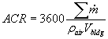

= mass flow rate into the conditioned space [kg/s]
= mass flow rate into the conditioned space [kg/s]
When ContamX performs a simulation, it creates a set of results files within the same directory that the project file is stored. These results files have the same file name as the project file with different extensions appended to indicate the type of results file. The following table lists the different file extensions and gives a brief description of the files. Details of each file are provided following the table.
| Extension | Type | File Description |
| ACH | Text | Whole building air change rate - broken down into airflow path and ventilation system components and the combined value. This file can contain results for each time step and/or daily box-whisker results. |
| AGE | Text | Age of air - age of air results for each zone at each time step and/or daily box-whisker results. |
| BAL | Text | Balance - results of duct balancing calculation. |
| CBW | Text | Contaminant box whisker results - only created for daily box-whisker results. |
| CEX | Text | Contaminant exfiltration result. |
| CSM | Text | Contaminant source/sink summation - total mass of contaminants generated and/or accumulated by source/sinks and filters during a simulation. |
| EBW | Text | Occupant exposure results - average exposure of each occupant to each contaminant for each time step and/or daily box-whisker results. |
| LOG | Text | Controls log file - contains the output of all Report control nodes. |
| RST | Binary | Simulation restart file - only for use by ContamX for restarting simulations at the beginning of intermediate days of a simulation. |
| RXR | Binary | Short time step simulation results cross reference data |
| RZF | Binary | Short time step simulation results zone environmental properties |
| RZM | Binary | Short time step simulation results zone mass fractions |
| RZ1 | Binary | Short time step simulation results 1D zone cell mass fractions |
| SIM | Binary | Detailed simulation results - airflow rates and pressure difference of flow links, reference pressures and temperatures of airflow nodes, and contaminant concentrations of contaminant nodes at each time step. This is the file from which SketchPad results and graphs are produced and displayed using ContamW. It is also the file from which Export and Report files can be generated. |
| SQLITE3 | Binary | SQLite database file contains the same data as the SIM file. |
| SRF | Text | Surface result file - contains contaminant concentrations for source/sinks that include a reversible storage node. |
| VAL | Text | Model "validation" test results file - contains the results of either the Building Airflow Test or Building Pressurization Test airflow simulation methods. |
<project name>.ACH - Whole Building Air Change Rate
The air change rate is calculated based on the summation of airflow rates from the ambient zone into the conditioned space of the building including ducts and simple air handlers. Results are presented based on total flows into the mechanical systems (ducts and simple AHS), airflow paths and total of all flows. The conditioned space includes all mechanical system volume and the volume of those zones which you select to include in building volume (See Zone Data in the Working with Zones section).

where
ACR = whole building air change rate [h-1]
= mass flow rate into the conditioned space [kg/s]
rair = density of incoming air [kg/m3]
Vbldg = volume of conditioned space [m3]
If there is a mass-imbalance for any airflow zone, ContamX will generate a warning message indicating the zone in question.
File Format (tab-delimited text):
The first line of the ACH file contains:
StartDate // first date of simulation (mm/dd ® IX)
EndDate // last date of simulation (mm/dd ® IX)
SimStep // simulation time step [s](IX)
achsave // save detailed results flag [0/1] (IX)
abwsave // save box-whisker results flag [0/1] (IX)
Vcond // volume of conditioned space [m^3] (R4)
If achsave is 1, then a header line is written for the detailed data:
"day time path duct total"
If abwsave is 1, then a header line is written for daily box-whisker data:
"day b-w avg dev min min max max"
Then for each day
If achsave is 1, then a line of data is written for each output time step for a day:
Date // date (mm/dd ® IX)
Time // time (hh:mm:ss ® I4)
ACRpath // air change rate via flow paths (R4)
ACRduct // air change rate via ducts (R4)
ACRtotal // ACRpath + ACRduct (R4)
If abwsave is 1, then three lines of daily box-whisker data are written - one for paths, ducts and total respectively. Each line contains:
date // date (mm/dd ® IX)
type // "path" "duct" or "total"
avg // average value for day (R4)
dev // standard deviation (R4)
tmin // time at which min occurs (hh:mm:ss ® I4)
min // minimum value for day (R4)
tmax // time at which max occurs (hh:mm:ss ® I4)
max // maximum value for day (R4)
At the end:
If abwsave is 1, then three lines of summary box-whisker data for the entire simulation - one for paths, ducts and total respectively. Each line contains:
"final"
type // "path" "duct" or "total"
avg // average value for simulation (R4)
dev // standard deviation for sim (R4)
dmin // date on which min occurs (mm/dd ® IX)
min // minimum value for simulation (R4)
dmax // date on which max occurs (mm/dd ® IX)
max // maximum value for simulation (R4)
Example File:
1/1 1/1 3600 1 0 847.44
day time path duct total
1/1 01:00:00 2.911 0.010 2.921
1/1 02:00:00 2.932 0.098 3.030
<project name>.AGE - Age of Air
The mean age of air of a zone is an indication of the residence time of air within a zone. ContamX can calculate these values for all the zones in a project and provide them in detailed or box-whisker form. ContamX calculates these values using the method presented in AIVC Technical 34 [AIVC 1991].
File Format (tab-delimited text):
The first line of the AGE file contains:
StartDate // first date of simulation (mm/dd ® IX)
EndDate // last date of simulation (mm/dd ® IX)
SimStep // simulation time step [s](IX)
zaasave // save detailed zone age of air results flag [0/1] (IX)
zbwsave // save box-whisker results flag [0/1] (IX)
If zaasave is 1, then a header line is written for the detailed data:
"day time" zone[] // …list of zone numbers
If zbwsave is 1, then a header line is written for daily box-whisker data:
"day zone avg dev min min max max"
Then for each day
If zaasave is 1, then a line of data is written for each output time step for a day:
Date // date (mm/dd ® IX)
Time // time (hh:mm:ss ® I4)
age[] // age of air for each zone [h]
If zbwsave is 1, then a line of daily box-whisker data is written for each zone. Each line contains:
date // date (mm/dd ® IX)
zone // zone number (IX)
avg // average value for day (R4)
dev // standard deviation (R4)
tmin // time at which min occurs (hh:mm:ss ® I4)
min // minimum value for day (R4)
tmax // time at which max occurs (hh:mm:ss ® I4)
max // maximum value for day (R4)
At the end:
If zbwsave is 1, a line of summary box-whisker data is written for each zone for the entire simulation. Each line contains:
"final"
zone // zone number (IX)
avg // average value for simulation (R4)
dev // standard deviation for sim (R4)
dmin // date on which min occurs (mm/dd ® IX)
min // minimum value for simulation (R4)
dmax // date on which max occurs (mm/dd ® IX)
max // maximum value for simulation (R4)
Example File:
3 1/1 1/1 300 0 1
day zone avg dev min min max max
1/1 1 1.000 0.000 00:05:00 1.000 00:05:00 1.000
1/1 2 2.000 0.000 00:05:00 2.000 00:05:00 2.000
1/1 3 3.000 0.000 00:05:00 3.000 00:05:00 3.000
final 1 1.000 0.000 1/1 1.000 1/1 1.000
final 2 2.000 0.000 1/1 2.000 1/1 2.000
final 3 3.000 0.000 1/1 3.000 1/1 3.000
<project name>.BAL - Duct Balance Results File
This file contains the results of a duct balance operation if performed by ContamX. It contains the status of the balance operation along with detailed results and error tracking information if required.
File Format (tab-delimited text):
The first line of the BAL file contains the status of the balance procedure:
Code // balance completion code [0-5] (IX)
!Message[] // comment containing completion message (I1)
The next two lines are headers for fan and terminal data:
!fan duct # flow [kg/s] Prise [Pa] RPMratio
!trm jctn # rel-flow [-] Cb [-]
Then for each balancing terminal and associated fans:
If terminal:
"trm" // indicates terminal data
junc // junction number of terminal (IX)
rflow // relative flow Fbal/Fdes (R4)
Cb // balance coefficient (R4)
If fan:
"fan" // indicates fan data
duct // duct segment number of fan(IX)
flow // total fan flow (R4)
prise // pressure rise across fan (R4)
If fan performance curve fan:
frpm // RPM ratio required to achieve balance
// flow rate with design fan (R4)
The last line is exactly:
end
Example File:
0 ! Flow balance iterations converged
!fan duct # flow [kg/s] Prise [Pa] RPMratio
!trm jctn # rel-flow [-] Cb [-]
fan 4 0.334472 68.0745
trm 1 1.000025 4.38419
trm 2 0.999974 4.2013
fan 8 0.334472 107.938 0.78357
trm 11 1.000007 7.76847
trm 12 0.999991 7.58544
end
<project name>.CBW - Contaminant Box Whisker
This file contains contaminant daily box-whisker results and summary box-whisker results for the entire simulation period. Results are presented for all zones within a project file as well as for each contaminant simulated.
File Format (tab-delimited text):
The first line of the CBW file is a header describing the amount of data in the file:
NumZones // number of zones (IX)
NumCont // number of contaminants (IX)
StartDate // first date of simulation (mm/dd ® IX)
EndDate // last date of simulation (mm/dd ® IX)
The second line is a header:
"day zone ctm avg dev min min max max"
Then daily box-whisker results for each day
for each zone
for each contaminant:
date // date (mm/dd ® IX)
zone // zone number (IX)
ctm // contaminant number (IX)
avg // average value for day (R4)
dev // standard deviation (R4)
min // minimum value for day (R4)
tmin // time at which min occurs (hh:mm:ss ® I4)
max // maximum value for day (R4)
tmax // time at which max occurs (hh:mm:ss ® I4)
After all daily values comes the summary for the entire simulation
for each zone
for each contaminant:
"final"
zone // zone number (IX)
ctm // contaminant number (IX)
avg // average value for simulation (R4)
dev // standard deviation for sim (R4)
min // minimum value for simulation (R4)
dmin // date on which min occurs (mm/dd ® IX)
max // maximum value for simulation (R4)
dmax // date on which max occurs (mm/dd ® IX)
Example File:
2 1 1/1 1/1
day zone ctm avg dev min min max max
1/1 0 1 0.000e+000 0.000e+000 00:05:00 0.000e+000 00:05:00 0.000e+000
1/1 1 1 1.036e-004 0.000e+000 00:05:00 1.036e-004 00:05:00 1.036e-004
1/1 2 1 6.839e-005 4.049e-005 00:05:00 0.000e+000 24:00:00 1.019e-004
final 0 1 0.000e+000 0.000e+000 1/1 0.000e+000 1/1 0.000e+000
final 1 1 1.036e-004 0.000e+000 1/1 1.036e-004 1/1 1.036e-004
final 2 1 6.839e-005 4.049e-005 1/1 0.000e+000 1/1 1.019e-004
<project name>.CEX - Contaminant Exfiltration
This file contains the mass of each contaminant that exits the building during each simulation time step.
File Format (tab-delimited text):
The first line provides the name of the project.
“Project:” PrjName[]
The next line provides a header.
“nctm units”
The next line provides the number of contaminant and the units of mass.
nc // number of contaminants (I4)
“kg” // mass units, kilogram
The next line is a header line.
“Date Time”
contaminant_name[nc] // name of each contaminant (I1)
For each time step a line is output containing:
Date // date (mm/dd ® IX)
Time // time (hh:mm:ss ® I4)
For each contaminant:
Mass // mass exiting to ambient during the time step (R4)
The final line provides the total mass of each contaminant that left the building during the simulation.
TotalMass[nc] // for entire simulation period (R4)
Example File:
Project: test-cex-a
nctm units
2 kg
Date Time CTM1 PART1
1/1 01:00:00 3.00001e-001 1.49983e-010
1/1 02:00:00 3.00001e-001 1.49983e-010
. . .
1/1 24:00:00 3.00001e-001 1.49983e-010
Sum 7.20003e+000 3.59958e-009
<project name>_<contaminant name>.CEX – Detailed Contaminant Exfiltration
These files provide the amount of a single contaminant that leaves the building through individual flow paths, duct terminals and duct leaks connected to ambient and for each simple air handling system exhaust. One file is generated for each contaminant simulated.
File Format (tab-delimited text):
The first line of the CEX file contains the name of the project.
PrjName[]
The next line is a header line.
“Date Time”
contaminant_name[nc] // name of each contaminant (I1)
The next line of the file provides general file information.
npath // number of connections to ambient
cont_name // name of contaminant in this file
“kg” // units of mass
The next line is the header line. The first column heading is date/time followed by a list of connections to ambient. Connections are provided with a type character followed by a number of the item according to the project file. Type characters are: ‘p’ = airflow path, ‘t’ = duct terminal, ‘l’ = duct leak and ‘a’ = air handling system exhaust (e.g., p5 = airflow path 5 as found on the SketchPad).
“Date Time”
connection[nconn] // identifier of each connection to ambient
For each time step a line is output containing:
Date // date (mm/dd ® IX)
Time // time (hh:mm:ss ® I4)
For each connection:
Mass // mass exiting through given connection during time step (R4)
Example File:
Project: test-cex-a
npath ctm_name units
4 CTM1 kg
Date Time p1 p2 a1 t2
1/1 01:00:00 0.00000e+000 1.00000e-001 1.00000e-001 1.00000e-001
1/1 02:00:00 0.00000e+000 1.00000e-001 1.00000e-001 1.00000e-001
. . .
1/1 24:00:00 0.00000e+000 1.00000e-001 1.00000e-001 1.00000e-001
<project name>.CSM - Contaminant Source/Sink Summation
This file contains summary data related to contaminant simulation. This file is created automatically by ContamX whenever transient contaminant simulations are performed. Source/sink, filter and zone numbers are provided for referencing back to ContamW. The file consists of six sections:
Contaminant source/sink summary - This section provides the mass of contaminant generated, removed and stored for each source/sink during a simulation.
Filter challenge summary - This section provides the mass of contaminant to which each filter is exposed during a simulation (upstream challenge).
Filter loading summary - This section provides the mass of contaminant "loaded" onto each filter during a simulation (not including initial loading).
Filter breakthrough summary - This section provides indication of whether or not filter breakthrough applies. If breakthrough applies and occurs then the date and time when it occurs and the breakthrough efficiency are provided, otherwise the efficiency at the end of the simulation is provided. Breakthrough only applies to Simple Gaseous Filters for which a non-zero breakthrough efficiency is provided.
Interactions with ambient - This section provides the mass of each contaminant that enters and exits the building volume, i.e., those that are set to be included in the building volume.
Simulation time - This section provides information on the duration of the simulation.
File Format (tab-delimited text):
The first two lines of the CSM file display the PRJ file name and the date and time the simulation was run:
"Project:" FilePath[] // the full path of the PRJ file (I1)
"Time:" SimTime[] // PC time the simulation was started (I1)
-- Blank line --
This is followed by the number of contaminants simulated.
NumCont "contaminants" // number of contaminants (I4)
-- Blank line --
This is followed by the Contaminant source/sink summary section.
NOTE: the following section is only presented if source/sinks exist within the PRJ file.
The first line of the source/sink section is a header:
"Contaminant source/sink summary."
The next line contains the number of source/sinks:
NumSS "source/sinks" // number of source/sinks(IX)
The next line is a header:
s/s# zn# species released removed stored [kg]
Then a line of data for each source/sink:
SSNum // source/sink number (IX)
Type[] // source/sink type (I1)
Name[] // contaminant name (I1)
ZoneNum // zone number (IX)
As // surface area of deposition elements [m^2] (R4)
mult // multiplier (R4)
Xmin // location coordinates [m] (R4)
Xmax
Ymin
Ymax
Zmin
Zmax
MassRel // mass released(R4)
MassRem // mass removed [kg] (R4)
MassAcc // mass accumulated including previous storage (R4)
-- Blank line ---
This is followed by the Filter challenge section.
NOTE: this section is only presented if filters exist within the PRJ file.
The first line of the section is a header:
"Filter challenge summary."
The next line contains the number of filters:
NumFilt "filters" // number of filters (IX)
The next line is a header:
"path" Ctm[nc] "element" // Ctm[nc] is a list of contaminants
// where nc is the number of contaminants.
Then two lines of data for each filter:
The first line is:
FltNum // number of flow component that contains the filter
// and letter indicating type (p:path, d:duct, t:term)
MassUp[nc] // challenge mass of each contaminant [kg] (R4)
Name[] // filter element name (I1)
The second line is:
"--" // indicates same filter as previous
MassDown[nc] // unfiltered mass of each contaminant [kg] (R4)
"downstream" // indicates downstream mass
-- Blank line --
This is followed by the Filter loading section.
NOTE: this section is only presented if filters exist within the PRJ file.
The first line of the section is a header:
"Filter loading summary."
The next line contains the number of filters:
NumFilt // number of filters (IX)
The next line is a header:
"path" Ctm[nc] "element ns" // Ctm[nc] is a list of contaminants
// nc is the number of contaminants.
Then a line of data for each filter:
FltNum // number of flow component that contains the filter
// and letter indicating type (p:path, d:duct, t:terminal)
MassLoad[nc] // mass filtered during simulation [kg] (R4)
Name[] // filter element name (I1)
ns // number of sub-elements, ns>0 for super-filter (I4)
If ns>0, then a line of data for each sub-filter of the super-filter:
"--" // indicates sub-filter
MassLoad[nc] // mass filtered during simulation [kg] (R4)
Name[] // filter element name (I1)
"0" // zero sub-elements (I4)
-- Blank line --
This is followed by the Filter breakthrough section.
NOTE: this section is only presented if filters exist within the PRJ file.
The first line of the section is a header:
"Filter breakthrough summary."
The next line contains the number of filters:
NumFilt "filters" // number of filters for which for which
// breakthrough is possible, currently on Simple
// Gaseous types (IX)
The next two lines are headers:
"path element"
" contaminant date time efficiency"
Then a line of data for each filter:
FltNum // number of flow component that contains the filter
// and letter indicating type (p:path, d:duct, t:terminal)
Name[] // filter element name (I1)
nc // number of contaminants (I4)
Then a line of data for each contaminant for which breakthrough is specified.
Each line contains:
"--" // indicates continuation of filter
Ctm[] // contaminant name (I1)
If breakthrough occurred:
Date[] // date on which breakthrough occurs (MMMDD ® I4)
Time // time at which breakthrough occurs (hh:mm:ss ® I4)
bkeff // breakthrough efficiency
If breakthrough does not occur:
"--" // indicates no breakthrough date
"--" // indicates no breakthrough time
eff // efficiency at end of simulation
-- Blank line --
This is followed by the Interactions with ambient section.
The next two lines of the section are headers. They are exactly:
"Interactions with ambient."
"contaminant flow from flow to [kg]"
Then a line of data for each contaminant:
Ctm[] // contaminant name (I1)
MassFrom // total mass entering from ambient zone [kg] (R4)
MassTo // total mass exiting to ambient zone [kg] (R4)
-- Blank line --
The final section is the Simulation time section:
It contains a header and three lines of data:
"Simulation time:"
tsec "seconds" // simulation time in seconds [s] (IX)
thr "hours," // simulation time in hours [h] (R4)
tday "days" // simulation time in days [days] (R4)
Example File:
Project: C:\CONTAM96\samples\.4\Filters\TestBK3.prj
Time: Mon Jul 18 10:17:22 2005
5 contaminants
Contaminant source/sink summary.
4 source/sinks
s/s# type species zn# As mult Xmin Xmax Ymin Ymax Zmin Zmax released removed stored [kg]
1 ccf CO 3 0 1 0 0 0 0 0 0 7.20E-01 0.00E+00 0
2 brs Cl2 3 0 1 0 0 0 0 0 0 1.00E-04 0.00E+00 0
4 drs Cl2 4 0 1 0 0 0 0 0 0 0.00E+00 1.04E-01 0
3 bls Cl2 4 1 1 0 0 0 0 0 0 8.66E-03 8.67E-03 1.23E-05
Filter challenge summary.
3 filters
path CO CO2 Cl2 part0.10 part1.00 element
6p 1.164e-001 1.829e+000 2.361e-001 1.204e-001 1.204e-001 Both
-- 6.215e-002 1.829e+000 1.079e-001 1.039e-001 7.389e-002 downstream
1d 1.164e-001 1.829e+000 2.361e-001 1.204e-001 1.204e-001 MERV10
-- 1.164e-001 1.829e+000 2.361e-001 1.039e-001 7.389e-002 downstream
2t 1.164e-001 1.829e+000 2.361e-001 1.039e-001 7.388e-002 GF0
-- 6.213e-002 1.829e+000 1.079e-001 1.039e-001 7.388e-002 downstream
Filter loading summary.
3 filters
path CO CO2 Cl2 part0.10 part1.00 element ns
6p 5.427e-002 0.000e+000 1.282e-001 1.649e-002 4.652e-002 Both 2
-- 0.000e+000 0.000e+000 0.000e+000 1.649e-002 4.652e-002 MERV10 0
-- 5.427e-002 0.000e+000 1.282e-001 0.000e+000 0.000e+000 GF0 0
1d 0.000e+000 0.000e+000 0.000e+000 1.648e-002 4.651e-002 MERV10 0
2t 5.427e-002 0.000e+000 1.282e-001 0.000e+000 0.000e+000 GF0 0
Filter breakthrough summary.
2 filters
path element nc
contaminant date time efficiency
6p Both 2
-- CO Jan01 01:01:00 0.3
-- Cl2 Jan01 00:58:00 0.5
2t GF0 2
-- CO Jan01 01:01:00 0.3
-- Cl2 Jan01 00:58:00 0.5
Interactions with ambient.
contaminant mass from mass to [kg]
CO 0.000e+000 2.067e-001
CO2 0.000e+000 4.938e+000
Cl2 0.000e+000 3.011e-001
part0.10 0.000e+000 2.954e-001
part1.00 0.000e+000 2.414e-001
Simulation time:
7200 seconds
2 hours
0.0833333 days
<project name>.EBW - Occupant Exposure
Occupant exposure can only be calculated for transient contaminant simulations. The occupant exposure is calculated based on the contaminant concentrations within the zones (or zone cells when using 1D zones with the short time step method) occupied by each occupant. These zones (or cells) are determined based on the associated occupancy schedules. The exposure is determined by integrating the concentration vs. time using the mean-value of the contaminant concentrations to which the occupant is exposed during each simulation time step. The resultant integral is divided by the output time step then written to the file in units of kg_cont/kg_air.
File Format (tab-delimited text):
The first line of the EBW file is a header describing the data in the file:
NumExps // number of exposure icons (IX)
NumCont // number of contaminants (IX)
StartDate // first date of simulation (mm/dd ® IX)
EndDate // last date of simulation (mm/dd ® IX)
SimStep // simulation time step [s](IX)
expsave // save detailed results flag [0/1] (IX)
ebwsave // save box-whisker results flag [0/1] (IX)
If expsave is 1, then a header line is written for the detailed data:
"day time ctm" exp[] // exp[] is a list of exposure icon numbers
If ebwsave is 1, then a header line is written for daily box-whisker data:
"day pexp ctm avg dev min min max max"
Then for each day
If expsave is 1, then a line of data is written for each for each contaminant and output time step for a day:
Date // date (mm/dd ® IX)
Time // time (hh:mm:ss ® I4)
exp[] // exposure for each exp icon for timestep [kg/kg]
If ebwsave is 1, then a line of daily box-whisker data is written for each exposure icon:
date // date (mm/dd ® IX)
exp // exposure icon number (IX)
ctm // contaminant number (IX)
avg // average value for day (R4)
dev // standard deviation (R4)
tmin // time at which min occurs (hh:mm:ss ® I4)
min // minimum value for day (R4)
tmax // time at which max occurs (hh:mm:ss ® I4)
max // maximum value for day (R4)
At the end:
If ebwsave is 1, a line of summary box-whisker data is written for each exposure icon and for each contaminant for the entire simulation. Each line contains:
"final"
exp // exposure icon number (IX)
ctm // contaminant number (IX)
avg // average value for simulation (R4)
dev // standard deviation for sim (R4)
dmin // date on which min occurs (mm/dd ® IX)
min // minimum value for simulation (R4)
dmax // date on which max occurs (mm/dd ® IX)
max // maximum value for simulation (R4)
Example File:
1 2 1/1 1/1 300 1 1
day time ctm 1
day pexp ctm avg dev min min max max
1/1 01:00:00 1 2.811e-007
1/1 01:00:00 2 9.970e-008
1/1 02:00:00 1 2.571e-007
1/1 02:00:00 2 6.109e-008
1/1 1 1 3.021e-007 0.000e+000 02:00:00 2.571e-007 00:05:00 3.592e-007
1/1 1 2 1.061e-007 1.945e-008 02:00:00 6.109e-008 00:05:00 1.562e-007
final 1 1 3.021e-007 0.000e+000 1/1 2.571e-007 1/1 3.592e-007
final 1 2 1.061e-007 1.945e-008 1/1 6.109e-008 1/1 1.562e-007
<project name>.LOG
If you perform a transient simulation and implement report control elements, ContamX will create a file in the same directory as your project file with the name of your project file and the .LOG extension appended (See Control Element Type: Report a Value). This file will contain a line of data at each output time step and a column of signal values for each report control element.
<project name>.RST - Simulation Restart File
Restart is an alternative to normal initialization of a simulation. It contains the state of all airflow and contaminant nodes, flow rates and pressure differences for all flow paths, contaminant storage terms for sinks, and signal values of various control node types. State data will be stored at 24:00:00 of all days simulated.
File Format (binary):
Header data:
m[0] = 0L; /* TURBO C++ messes up the first bytes written; */
m[1] = (I4)_nzone; /* therefore, send 4 unused bytes. */
m[2] = (I4)_npath;
m[3] = (I4)_nctm;
m[4] = (I4)_njct;
m[5] = (I4)_ndct;
m[6] = (I4)_ncss;
m[7] = (I4)_nctrl;
m[8] = (I4)_rcdat.date_0;
m[9] = (I4)_rcdat.date_1;
m[10] = (I4)_rSizeData;
m[11] = (not set)
m[1] thru m[7] allow ContamW to check for some changes in the project.
m[8] and m[9] are the date limits displayed to the user.
m[11] will allow reading all dates on the file -- could be used to create a selection box of available dates.
RESTART DATA:
For all AF_NODEs:
R8 T - temperature
R8 P - pressure
R8 M - mass
R4 Mf[_nctm] - mass fractions
For all AF_PATHs:
R8 Flow[0] - primary flow
R8 Flow[1] - secondary flow
R8 dP - pressure drop
For CSS_DSC:
CSE_EDS (I4)pss->local (stored as R4, converted to I4 in simulation)
CSE_BLS (R4)pss->local
For CT_NODEs:
SNSDAT: R4 oldsig
PICDAT: R4 oldsig, R4 olderr
HYSDAT: R4 oldsig
1D Simulation Results (RXR, RZF, RZM and RZ1)
The RXR file provides the number of contaminants, zones, and cells necessary to read the other three 1D simulation results files. 1D simulation results can be displayed and converted to tab-delimitted files using the utility programs provided by NIST: ContamRV and 1DZRead respectively.
These files require that the structures in ContamW and ContamX be compiled using no greater than 4-byte member alignment (under Visual C++). The file is unreadable if the default structure member alignment (8-bytes) is used.
The day and time values are provided so the program reading these files can insure it is reading from the proper position. The RXR file provides the number of contaminants, zones, and cells necessary to read the other three files.
The first section of the file is:
24 // identifier (for ContamX 2.4) (I4)
_time_list // listing time steps [s](I4)
_date_0 // start of simulation - day of year (I4)
_time_0 // start of simulation - time of day [s] (I4)
_date_1 // end of simulation - day of year (I4)
_time_1 // end of simulation - time of day [s] (I4)
_urzf // if true, create RZF file (I4)
_urzm // if true, create RZM file (I4)
_urz1 // if true, create RZ1 file (I4)
_nctm // number of contaminants (I4)
_nzone // number of zones (excluding ambient) (I4)
_nZ1D // number of 1-D zones (I4)
_nC1D // total number of cells in 1-D zone (I4)
If _nZ1D > 0, then the following data is written for each 1-D zone:
nr // the ContamW zone number (I4)
nc // the number of cells in the zone (I4)
X1 // the x-coordinate of the axis origin [m] (R4)
Y1 // the y-coordinate of the axis origin [m] (R4)
Z1 // the z-coordinate of the axis origin [m] (R4)
X2 // the x-coordinate of the axis end [m] (R4)
Y2 // the y-coordinate of the axis end [m] (R4)
Z2 // the z-coordinate of the axis end [m] (R4)
For each time step:
_dayofy // day of year [1 to 365] (I4)
_sim_time // time value [s] [0 to 86400] (I4)
for each zone:
T // Temperature [K] (R4)
P // Gage Pressure [Pa] (R4)
D // Density [kg/m3] (R4)
For each time step:
_dayofy // day of year [1 to 365] (I4)
_sim_time // time value [s] [0 to 86400] (I4)
for each zone:
CC[0] // mass fraction of species 0 [kg/kg] (R4)
...
CC[n] // mass fraction of species n [kg/kg] (R4)
For each time step:
_dayofy // day of year [1 to 365] (I4)
_sim_time // time value [s] [0 to 86400] (I4)
for each 1-D zone cell:
CC[0] // mass fraction of species 0 [kg/kg] (R4)
...
CC[n] // mass fraction of species n [kg/kg] (R4)
<project name>.SIM - Detailed Simulation Results
The SIM file is the main results file of ContamX containing detailed airflow and contaminant results. The data in the SIM file is used by ContamW to display airflow results on the SketchPad, to display contaminant concentrations in the results display window, to create export and report files, and to generate charts of transient simulation results. Output is created at every output time step. Shorter output time steps allow you to see the results in more detail, but lead to larger simulation results file.
The format of this file has been slightly modified from the previous version to accommodate a greater number of building components (zones, paths, ducts, etc.). This is reflected in the "nr" fields that have changed from I2 to I4. It is still a binary file (not "human-readable" as opposed to a text file) to provide for faster access and smaller file size than a text file.
Several post-processor programs are available in the SOFTWARE Tools section of the NIST Multizone Modeling website that can be used to read the .SIM file and generate various forms of output from it.
The first 16 lines of the simulation results file contain data (32-bit integers) to help assure that the results apply to the project file currently in ContamW and to set the array sizes necessary to process the results.
24 // CONTAM version number id (I4)
_nzone // number of airflow zones (excluding ambient) (I4)
_npath // number of airflow paths (I4)
_nctm // number of contaminants (I4)
_njct // number of junctions and terminals (I4)
_ndct // number of duct segments (I4)
_time_list // listing time steps [s](I4)
_date_0 // start of simulation - day of year (I4)
_time_0 // start of simulation - time of day (I4)
_date_1 // end of simulation - day of year (I4)
_time_1 // end of simulation - time of day (I4)
_pfsave // if true, write path flow results (I4)
_zfsave // if true, write zone flow results (I4)
_zcsave // if true, write zone contaminant results (I4)
_nafnd // number of airflow nodes (zones + junctions) (I4)
_nccnd // number of contaminant nodes (zones + junctions) (I4)
_nafpt // number of airflow paths (paths + ducts) (I4)
This is followed by _nafnd lines of airflow node cross-reference data:
typ // source of node [zone, junction or terminal] (I4)
nr // zone, junction or terminal number (I4)
The next _nafnd lines give the contaminant node cross-reference data:
typ // source of node [zone or junction] (I4)
nr // zone, junction or terminal number (I4)
The next _nafpt lines give the airflow path cross-reference data:
typ // source of path [path, duct, or leak] (I4)
nr // path, duct, or leak number (I4)
The simulation results for each day consist of:
The results for each time step consist of:
A line of time and ambient data:
dayofy // day of year [1 to 365] (I2)
daytyp // type of day [1 to 12] (I2)
sim_time // time value [s] [0 to 86400] (I4)
Tambt // ambient temperature [k] (R4)
P // barometric pressure [Pa] (R4)
Ws // wind speed [m/s] (R4)
Wd // wind angle [deg] (R4)
CC[0] // ambient mass fraction of species 0 [kg/kg] (R4)
...
CC[n] // ambient mass fraction of species n [kg/kg] (R4)
A line of data for each airflow path:
nr // path number; use as check (I4)
dP // pressure drop across path [Pa] (R4)
Flow0 // primary flow value [kg/s] (R4)
Flow1 // alternate flow value [kg/s] (R4)
A line of data for each airflow node (excluding ambient):
nr // node number; use as check (I4)
T // node temperature [K] (R4)
P // node reference pressure [Pa] (R4)
D // node air density [kg/m^3] (R4)
A line of data for each contaminant node (excluding ambient):
nr // node number; use as check (I4)
CC[0] // mass fraction of species 0 [kg/kg] (R4)
...
CC[n] // mass fraction of species n [kg/kg] (R4)
The time step data is followed by summary data for the day.
It begins with the following line of ambient data:
dayofy // day of year [1 to 365] (I2)
daytyp // type of day [1 to 12] (I2)
Tamax // maximum ambient temperature [k] (R4)
Tamin // minimum ambient temperature [k] (R4)
Pavg // average barometric pressure [Pa] (R4)
Wsmax // maximum wind speed [m/s] (R4)
Wsavg // average wind speed [m/s] (R4)
CC[0] // maximum ambient mass fraction of species 0 [kg/kg] (R4)
...
CC[n] // maximum ambient mass fraction of species n [kg/kg] (R4)
A line of data for each airflow path:
nr // path number; use as check (I4)
dPmax // maximum pressure drop across path [Pa] (R4)
Flowmax // maximum primary flow value [kg/s] (R4)
0.0 // place holder (R4)
A line of data for each airflow node (excluding ambient):
nr // node number; use as check (I4)
T // node temperature [K] (R4)
P // node reference pressure [Pa] (R4)
D // node air density [kg/m^3] (R4)
A line of data for each contaminant node (excluding ambient):
nr // node number; use as check (I4)
CCmax[0] // maximum mass fraction of species 0 [kg/kg] (R4)
...
CCmax[n] // maximum mass fraction of species n [kg/kg]
Programmer's Note: this file requires that the structures in ContamW and ContamX be compiled using no greater than 2-byte member alignment (under Visual C++). The file is unreadable if the default structure member alignment is used.
<project file>.SQLITE3
The SQLITE3 file contains the same information as the SIM file but in SQLite3 database format consisting of the following tables: SimInfo, Time, AmbientConditions, NodeZoneFlowData, NodeZoneCcData, NodeDuctFlowData, NodeDuctCcData, LinkPathData, LinkDuctInfo, LinkDuctData. This file can be browsed and queried using a tool like DB Browser for SQLite.
<project file>.SRF
The SRF file contains contaminant concentrations for source/sinks that include a reversible storage node. Unlike most source/sinks, these contribute a contaminant node to the system of contaminant equations. Currently there are two types: boundary layer diffusion (BLS) and deposition/resuspension (DVR). The units for BLS nodes are kg of contaminant/kg of surface and those of DVR nodes are kg/m2.
Surface Result File - File Format (tab-delimited text):
The first line of the file is a header providing the name of the PRJ file:
"Project:" file[] // PRJ file name (I1)
-- Blank line --
Then a header line:
"nr zone type species units trace/non-trace"
Then for each surface node :
source // number of source/sink (IX)
zone // number of zone in which source is located (IX)
type[] // type of source/sink ("bls", "dvr") (I1)
species[] // name of species associated with source/sink (I1)
units[] // units of results (I1)
trace[] // type of source: "trace", "non-trace", "inactive" (I1)
-- Blank line --
Then a header line:
"date time " <type+nr> for each source/sink
Then a line of data for each listing time step:
date // date (mm/dd)
time // time (hh:mm:ss)
conc[] // surface concentration for each surface node (R4)
<project file>.VAL
The VAL file contains the results of either the Building Airflow Tests or Building Pressurization Test airflow simulation methods. The file will be created or overwritten each time you perform one of these tests on a project file, so be sure to rename or copy any files you wish to keep.
If you perform a Building Airflow Test calculation, the data written to this file will be divided into five sections: Building info and ACH, Zones, Junctions, Classified Flows and Volumes. The first and last sections are always written, but the other three are controlled by the simulation output parameters for the Airflow Test simulation method.
Building Airflow Test - File Format (tab-delimited text):
The first line of the file is a header providing the name of the PRJ file:
"Airflow Summary for" file[] // PRJ file name (I1)
-- Blank line --
Weather conditions section:
"Ambient T:" Tambt "C" // ambient temperature [C] (R4)
"Pressure:" Pbar "Pa" // barometric pressure [Pa] (R4)
"Wind spd:" wspd "m/s" // wind speed [m/s] (R4)
"Wind dir:" wdir "deg" // wind direction [deg] (R4)
"Time:" time day[] // sim time (hh:mm:ss ® I4) day of week (I1)
-- Blank line --
Whole building air change rate - total flow from conditioned to unconditioned zones divided by the total volume of conditioned zones. Air change rate is calculated as ACH = F * 3600/(ZoneDensity * ZoneVol). ACH can be calculated from data provided in the Classified Flow section :
"Bldg ACH:" ach // building air change rate [1/hr] (R4)
-- Blank line --
Zones section:
This section is only written to the file if the simulation output parameter BldgFlowZ is equal to 1.
"Zones: nZones "flows [ACH]"// number of zones (I4) plus header
Data header:
zone C/U Supply Ret/Exh OA sys OA tot Circ tot P [Pa] T [C] Vol [m^3]
A line of data for each zone (excluding implicit zones of simple air handling systems, i.e., cu = S) - all flows provided as air changes per hour, ACH [1/hr]:
nr // zone number (I4)
cu // C:conditioned, U:unconditioned, A:ambt, S:AHS
Qs // Total supply airflow from system to zone.
// Includes flow from: terminals, simple ahs, duct leaks
// and forced flow paths
Qrex // Total return + exhaust airflow from zone to system.
// Includes flow to: terminals, simple ahs, duct leaks
// and forced flow paths
Qoasys // Total outdoor airflow from system to zone.
// Includes flow from: terminals, simple ahs, duct leaks
// and forced flow paths connected to Ambt
Qoatot // Total outdoor air intake including all paths (non-forced flow)
// connected to ambient: Qoasys + direct infiltration
Qcirctot // "Circulation flow" sum of all flows out of zone
// Includes flow to: terminals, simple ahs, duct leaks,
// conditioned zones, unconditioned zones and Ambt
P // Zone pressure = absolute zone pressure minus the ambient
// pressure at the reference elevation of the level on
// which the zone is located [Pa]
T // Zone temperature [C]
V // Zone volume [m3]
-- Blank line --
Junctions section:
This section is only written to the file if the simulation output parameter BldgFlowD is equal to 1.
"Junctions:" nJct // number of junctions (I4)
Data header:
junction J/T OA [%] Flow [kg/s] P [Pa] T [C] Vol [m^3]
A line of data for each junction:
nr // junction number (I4)
jt // J:junction, T:terminal
poa // Percent outdoor air [%]
w // Airflow rate [kg/s]
P // Junction pressure [Pa]
T // Junction temperature [C]
V // Junction volume [m3]
-- Blank line --
Flow classification section:
This section is only written to the file if the simulation output parameter BldgFlowC is equal to 1.
"Classified Zone Airflows for " file[] ".prj" // PRJ file name (I1)
-- Blank line --
"Zones:" nZones "flows [kg/s]" // number of zones (I4) plus header
Data header:
"zone C/U Vol [m^3] Dens [kg/m^3] fmTerm fmLeak fmAHS fmFan fmCzone fmUzone fmAmbt toTerm toLeak toAHS toFan toCzone toUzone toAmbt oaTerm oaLeak oaAHS oaFan"
A line of data for each zone (excluding implicit zones of simple air handling systems, i.e., cu = S) - all flows provided in kg/s:
nr // zone number (I4)
cu // C:conditioned, U:unconditioned, A:ambt, S:AHS
V // Zone volume (volume for A is total cond volume
// including zones, ducts and simple AHS) [m3]
Dens // Zone density [kg/m3]
FfmTrm // Airflow rate into zone from terminals
FfmLeak // Airflow rate into zone from duct leaks
FfmAHS // Airflow rate into zone from simple AHS
FfmFan // Airflow rate into zone from forced flow elements
FfmZnC // Airflow rate into zone from conditioned zones
FfmZnU // Airflow rate into zone from unconditioned zones (except Ambt)
FfmAmbt // Airflow rate into zone from ambient (except forced flows)
FtoTrm // Airflow rate out of zone to terminals
FtoLeak // Airflow rate out of zone to duct leaks
FtoAHS // Airflow rate out of zone to simple AHS
FtoFan // Airflow rate out of zone to forced flow elements
FtoZnC // Airflow rate out of zone to conditioned zones
FtoZnU // Airflow rate out of zone to unconditioned zones (except Ambt)
FtoAmbt // Airflow rate out of zone to Ambt
FoaTrm // Outdoor airflow rate into zone from terminals
FoaLeak // Outdoor airflow rate into zone from duct leaks
FoaAHS // Outdoor airflow rate into zone from simple AHS
FoaFan // Outdoor airflow rate into zone from forced flow elements
-- Blank line --
Volume section:
"Volumes:"
"Conditioned zones"
VZCm "m^3" // Total conditioned zone volume [m3]
VZCft "cuft" // Total conditioned zone volume [ft3]
"Ducts & AHS (conditioned)"
VDCm "m^3" // Total system volume [m3]
VDCft "cuft" // Total system volume [ft3]
"Unconditioned zones"
VZUm "m^3" // Total unconditioned zone volume [m3]
VZUft "cuft" // Total unconditioned zone volume [ft3]
Example File:
Airflow Summary for DEMO7_AirflowTest.prj
Ambient T: 20.00 C
Pressure: 101325.00 Pa
Wind spd: 0.00 m/s
Wind dir: 0.00 deg
Time: 00:00:00 Sunday
Bldg ACH: 0.450
Zones: 5 flows [ACH]
zone C/U Supply Ret/Exh OA sys OA tot Circ tot P [Pa] T [C] Vol [m^3]
1 C 0.78505 0 0.18038 0.18038 0.79 949.0 20.0 216.0
2 C 3.1401 0 0.7215 0.7215 3.14 949.0 20.0 54.0
3 C 1.5702 6.0457 0.36079 0.36079 7.85 949.0 20.0 108.0
4 C 9.4165 0 2.1636 2.1636 9.42 949.0 20.0 18.0
5 C 4.7083 0 1.0818 1.0818 4.71 949.0 20.0 36.0
Junctions: 12
junction J/T OA [%] Flow [kg/s] P [Pa] T [C] Vol [m^3]
1 T 23.0 0.056717 78.0 20.0 0.00
2 T 23.0 0.056715 63.3 20.0 0.01
3 T 23.0 0.056721 20.3 20.0 0.01
4 T 23.0 0.056692 0.0 20.0 0.01
5 T 100.0 0.065148 -0.0 20.0 0.00
6 J 23.0 0.28354 -0.2 20.0 0.11
7 J 23.0 0.28354 79.3 20.0 0.05
8 J 23.0 0.22682 64.5 20.0 0.06
9 J 23.0 0.17011 21.4 20.0 0.09
10 J 23.0 0.11338 1.1 20.0 0.07
11 T 0.0 0.21839 -880.2 20.0 0.04
12 T 23.0 0.056692 0.0 20.0 0.01
Classified Zone Airflows for DEMO7_AirflowTest.prj
Zones: 6 flows [kg/s]
zone C/U Vol [m^3] Dens [kg/m^3] fmTerm fmLeak fmAHS . . . oaLeak oaAHS oaFan
0 A 432.45 1.2041 0 0 0 . . . 0 0 0
1 C 216 1.2041 0.056717 0 0 . . . 0 0 0
2 C 54 1.2041 0.056715 0 0 . . . 0 0 0
3 C 108 1.2041 0.056721 0 0 . . . 0 0 0
4 C 18 1.2041 0.056692 0 0 . . . 0 0 0
5 C 36 1.2041 0.056692 0 0 . . . 0 0 0
Volumes:
Conditioned zones
432.00 m^3
15255.9 cuft
Ducts & AHS (conditioned)
0.45 m^3
15.8 cuft
Unconditioned zones
0.00 m^3
0.0 cuft
Building Pressurization Test - File Format (tab-delimited text):
The first line of the file is a header providing the name of the PRJ file:
"Building Pressurization Test for" file[] // PRJ file name (I1)
-- Blank line --
"Pressurization:"
Ptest "Pa" // Test pressure (R4)
Ptest "in.H20" // positive => pressurization
// negative => depressurization
-- Blank line --
"Mass flow rate:"
F "kg/s" // Flow rate required to obtain Test pressure (R4)
F "kg/h"
F "scfm"
-- Blank line --
"Volume flow rate:"
Q "L/s" // Flow rate required to obtain Test pressure (R4)
Q "m^3/h"
Q "cfm"
-- Blank line --
"Ambient conditions:"
"Pressure"
Pambt "Pa" // Barometric pressure (R4)
Pambt "in.H2O"
"Temperature"
Tambt "C" // Outdoor temperature (R4)
Tambt "F"
"Air Density"
Dambt "kg/m^3" // Outdoor air density (R4)
Dambt "lb/ft^3"
-- Blank line --
"Volumes:"
"Conditioned zones"
VZC "m^3" // Total volume of conditioned zones
VZC "cuft"
"Ducts & AHS (conditioned)"
VD "m^3" // Total volume of ducts and AHS
VD "cuft"
"Unconditioned zones"
VZU "m^3" // Total volume of conditioned zones
VZU "cuft"
-- Blank line --
"Airflow details:"
"Path Czone Uzone dP [Pa] [in.H2O] F [kg/s] [kg/h] [scfm] Q [L/s] [m^3/h] [cfm]"
A line of data for each flow path contains airflow details. All flows and pressure differences are absolute values. If test is pressurization test, then all flows are from conditioned to unconditioned zones. If a depressurization test, then flows are from unconditioned to conditioned zones.
nr // path number
Czone // number of conditioned zone
Uzone // number of unconditioned zone
dP_Pa // pressure difference across path [Pa]
dP_iH20 // [in.H20]
F_kgs // mass flow through path [kg/s]
F_kgh // [kg/h]
F_scfm // [scfm]
Q_Ls // volume flow through path [L/s]
Q_m3h // [m^3/h]
Q_cfm // [cfm]
Example File:
Building Pressurization Test for Test2_BldgPress_Auto.prj
Pressurization:
50.0 Pa
0.201 in.H2O
Mass flow rate:
0.4674 kg/s
1683 kg/h
822.6 scfm
Volume flow rate:
388.2 L/s
1398 m^3/h
822.6 cfm
Ambient conditions:
Pressure
101320 Pa
29.920 in.H2O
Temperature
20 C
68 F
Air Density
1.2040 kg/m^3
0.07517 lb/ft^3
Volumes:
Conditioned zones
445.44 m^3
15730.6 cuft
Ducts & AHS (conditioned)
17.11 m^3
604.3 cuft
Unconditioned zones
384.89 m^3
13592.3 cuft
Airflow Details:
Path Czone Uzone dP [Pa] [in.H2O] F [kg/s] [kg/h] [scfm] Q [L/s] [m^3/h] [cfm]
3 4 1 49.95 0.2007 0.01077 38.78 18.95 0.008946 32.21 18.96
4 2 1 49.95 0.2007 0.009482 34.14 16.69 0.007875 28.35 16.69
5 3 1 49.95 0.2007 0.009482 34.14 16.69 0.007875 28.35 16.69
. . .
205 16 0 50.00 0.2009 0.009616 34.62 16.92 0.007987 28.75 16.92
206 16 0 50.00 0.2009 0.001923 6.924 3.384 0.001597 5.75 3.385
<project name>.XLOG – ContamX LOG File
The simulation engine will produce the text-based log file .XLOG within the same directory as the PRJ file. This file mostly contains simulation performance data that is typically not relevant to most users. However, if you encounter an error during simulation, this file can be useful to the program developers in tracing the error.